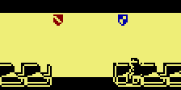
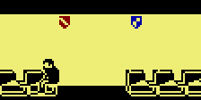

In the ZX Spectrum version, the tearaway is named BOY WANDER. For some reason,
his name in the C64 version has been de-punned: BOY WONDER.
The forgotten speech bubble
The graphic data for the speech bubble used in the ZX Spectrum version is
present in tiles $EF-$FF of the skool graphic data in pages $60-$67
and $68-$6F, but is not used in the C64 version.
Flawed characters
The font graphics for the '/' (slash), '\' (backslash) and '3' characters are
all slightly marred by missing pixels:
Expelled?
Little boy no. 5's initial x-coordinate is set to 128 (out of sight),
and the character-moving routine at $3AB4 skips over him. In other words, he
never appears in the game. Has he been expelled?
Unsynchronised shields
Shields that have been hit by ERIC don't necessarily flash in sync (as they do
by virtue of hardware design in the ZX Spectrum version): some may be displayed
with inverted colours when others are not. This is because the interrupt
routine at $39C7 that makes the shields flash will swap a shield's foreground
and background colours when a shield is hit, regardless of the current colour
status of any other shields.
Between the lines amounts
The number of lines a teacher gives is always a multiple of 50 from 150 to 900
(see the section of code at $1DE9). In the ZX Spectrum version, it's always a
multiple of 100 from 100 to 800.
A quick message
The PRESS 'U' IF YOU UNDERSTAND message doesn't have 8 spaces at the
end like other spoken messages, and so ends very abruptly. It's also different
from the corresponding message in the ZX Spectrum version: Press 'U'
if you understood.
When a teacher is giving lines, the speech bubble disappears. The speech bubble
reappears after the lines message box has been removed. This happens because
both the lines message box and the speech bubble are drawn by using sprites,
and there are not enough sprites to draw both simultaneously.
Strident scrawling
When ERIC writes on a blackboard, the letters always appear in upper case. This
is unlike the ZX Spectrum version, where ERIC can write in lower case as well.
One stampede out of two
Playtime period $FC, in which the little boys run around the
skool knocking people over, does not appear anywhere in the main
timetable. Its companion stampede playtime, $FD, does appear
once, however.
In the ZX Spectrum version, there are three stampede playtimes in the main
timetable: one instance of $FD, and two instances of $FC.
ANGELFACE's X-ray vision
When ANGELFACE is in the White Room waiting for the teacher to arrive and ERIC
is in the Exam Room next to and facing the wall, ANGELFACE will throw punches
at the White Room wall, apparently aware that ERIC is behind it, but unaware
that ERIC cannot walk through the wall and meet his fist.
The reason this happens is that the routine at $27D2, which checks whether
anyone is within punching range, does not take into account the walls between
classrooms.
However, ANGELFACE will only perform this trick in the White Room: in the other
classrooms he doesn't get close enough to the wall to be able to 'see' anyone
through it.
WITHIT unedited
Three of MR WITHIT's blackboard messages are different in the C64 version:
What's interesting is that the messages in the C64 version don't even fit on
the blackboard, which suggests that they were fixed for the ZX Spectrum
version. But the ZX Spectrum version was released before the C64
version. What goes on?
The special playtime truce
BOY WONDER doesn't spend every period looking for opportunities to fire his
catapult: in special playtimes $F3 (in which ANGELFACE has
mumps) and $F4 (in which EINSTEIN is going tell MR WACKER what
ERIC's up to) he keeps his catapult in his pocket at all times.
Similarly, ANGELFACE doesn't spend every period looking for opportunities to
beat up his classmates: in special playtimes $F3 (in which he
has mumps), $F4 (in which EINSTEIN is going to tell MR WACKER
what ERIC's up to) and $F5 (in which BOY WONDER has hidden a
pea-shooter) he keeps his fists to himself.
The accessible back seat
Unlike the ZX Spectrum version, in the C64 version kids (besides ERIC) can sit
in the back seat in the Reading Room.
The importance of little boy no. 11
In demo mode, ERIC bases his every move on where little boy no. 11 is and what
he's doing (see the main loop at $0800). This important role means that
little boy no. 11 is in all of ERIC's classes (if he weren't, ERIC would be
guilty of truancy in demo mode). In fact, little boy no. 11 is the only
character besides EINSTEIN who joins ERIC for every class.
Skool tunes
The tune that plays just before a game (or demo mode) starts, and also when
ERIC goes up a year, is
Girls
and Boys Come Out To Play. The tune that plays when ERIC makes the final
shield flash, and when he opens the safe, is
Au clair de la
lune.
One pace or three?
If a teacher is conducting a class without ERIC, or is conducting ERIC's class
but has chosen not to engage in a question-and-answer session with EINSTEIN, he
will pace up and down in front of the blackboard (or map). But the number of
paces up and then down depends on the room he's in.
If he's in the White Room, he will take one pace up and then down, oscillating
between x-coordinates 29 and 30. If he's in the Reading Room, he will also take
one pace up and then down, oscillating between x-coordinates 45 and 46. And if
he's in the Map Room, he will once again take one pace up and then down,
oscillating between x-coordinates 61 and 62. But if he's in the Exam Room, he
will take three paces up and then down, oscillating between x-coordinates 44
and 47.
The reason for this discrepancy in pace numbers is the method used to calculate
the teacher's next pace-up or pace-down destination, which is to take his
current x-coordinate and do an EOR $03 on it: see the sections of code at
$0A47 and $0B0C.
Doppelwacker
The sprite graphic data is split between two base pages: page $99 for
the boys and the catapult pellet, and page $A9 for the teachers.
However, the graphic data based in page $99 contains exact copies of most of MR
WACKER's sprites:
$99
$A9
This suggests that the original plan was to have the graphic data for every
character based in page $99, but space ran out while adding MR WACKER's
sprites, so the graphic data for him and the other teachers had to go to page
$A9.
Note the incorrect tile at the bottom right of animatory state $51, and the
corresponding incorrect tile at the bottom left of animatory state $D1. An
examination of the tile references used to build these sprites reveals
something interesting:
$5A
$59
$00
$58
$57
$64
$56
$55
$54
$53
$52
$0D
$00
$D9
$DA
$E4
$D7
$D8
$D4
$D5
$D6
$8D
$D2
$D3
The numbering of the tiles suggests that the bottom-right tile of animatory
state $51 was originally $51 (not $0D), and the bottom-left tile of animatory
state $D1 was originally $D1 (not $8D). If those tile references are changed to
$51 and $D1, the shoe on MR WACKER's back foot takes a different shape:
$99 (modified)
$A9
$51
$D1
$51
$D1
So why didn't copies of tiles $51 and $D1 from page $99 (which seem to finish
MR WACKER's back foot better than tiles $0D and $8D do) make their way into
page $A9? The most likely answer is lack of space: there are no unused sprite
tiles based in page $A9, and tiles $0D and $8D are similar enough to tiles $51
and $D1 to make reasonable substitutes.
Points for a punching
ANGELFACE is unique among the cast of characters in that if ERIC knocks him
over with a punch, 30 points are awarded (see $17E5).
BOY WONDER shoots, ERIC scores
BOY WONDER may be a tearaway, but sometimes his impulsive nature can be more of
a help than a hindrance. If he lets rip with his catapult and the pellet knocks
EINSTEIN for six, you score 30 points - just as if ERIC had floored the swot
himself. The reason for this is that the routine at $0FBA does not bother to
check whose pellet has collided with EINSTEIN's head.
It's also possible for one of BOY WONDER's pellets to bounce off a teacher's
head, hit a shield, and make it flash - scoring even more points - but that
would be a rare occurrence indeed.
Seat selection
Typically, when a teacher arrives at the classroom doorway to start the lesson,
the boys will rush to the back seat and sit down. However, if a boy is late for
class in the Map Room or Exam Room - that is, he arrives at the doorway after
the teacher already has - then he will take some other seat (as shown below),
depending on where his command list sends him.


The reason this happens to a latecomer is that he doesn't get a chance to walk
around before having to find a seat and sit down, because the teacher has
already arrived, the corresponding signal has already been raised, and so the
routine at $1A04 moves straight to the next command in the command list:
$1D16 (find a seat and sit down). That command makes the boy move forward to
the next seat if he's facing left (which is the case if he's just entered the
Map Room or Exam Room), or walk to the back of the classroom if he's facing
right. When the boy does get a chance to walk around first, he ends up facing
right before that command kicks in, and then keeps moving right to the back of
the class.
Note that BOY WONDER always tries to sit in the back seat in the Exam Room,
because after entering that room he goes to the blackboard first, and then
walks to the middle of the room, at which point he is facing right.
This unusual seat selection does not happen in the Reading Room or White Room,
because the boy is facing right when he arrives in the classroom, and so keeps
moving right to the back of the class.
Shield stats
Of the 15 shields on display around the skool, eight are blue and seven are
red.
Unlike the colours, the shield designs appear in equal numbers. Five shields
display the stripe design (and are all red):
five display the squares design (three blue and two red):
and the remaining five display the triangle design (all blue):
Teachers and classrooms
MR WACKER is the only teacher who teaches ERIC in all four classrooms. See his
personal timetable.
MR WITHIT never teaches ERIC in the Reading Room or the Exam Room, but he does
teach other kids in those rooms. See his personal timetable.
MR CREAK never teaches in the Map Room or the Exam Room. See his
personal timetable.
Timetable stats
There are 64 periods in the main timetable: 24 playtimes, 4 dinner
periods, and 36 lesson periods (when ERIC is supposed to be in either a
classroom or the Revision Library).
In the 36 lesson periods, ERIC is scheduled to be in the White Room 12 times,
the Reading Room 10 times, the Map Room 6 times, the Exam Room 3 times, and the
Revision Library 5 times.
ERIC has 9 classes with MR CREAK, 8 classes with MR ROCKITT, and 7 classes each
with MR WACKER and MR WITHIT.
ERIC has 6 classes with MR CREAK in the Reading Room (which is more than any
other teacher/classroom combination), but only one class with MR WACKER in the
White Room and only one class with MR ROCKITT in the Exam Room.
MR WACKER is on dinner duty for two of the dinner periods, and MR WITHIT is on
duty for the other two.
MR ROCKITT is the busiest teacher, teaching a class in 34 of the 36 lesson
periods. MR WACKER is the laziest teacher, teaching a class in only 26 periods.
MR WACKER teaches most often in the Exam Room (12 times); MR ROCKITT also
teaches most often in the Exam Room (15 times); MR WITHIT teaches most often in
the Map Room (22 times); and MR CREAK teaches most often in the Reading Room
(19 times).
Every boy is taught at least 3 times by each teacher, and at least 3 times in
each classroom. However, little boys 2, 3, 4, 6, 7, 8 and 9 are - unlike all
the other boys - never in the Revision Library during a lesson period.
ANGELFACE spends more lesson periods in the Revision Library than any other boy
(9 periods compared to BOY WONDER's 7 and ERIC's 5).
Playtime probabilities
During playtime, the teacher most likely to be found pacing up and down in the
staff room is MR CREAK, who spends 23 of the 24 playtimes in the main
timetable in that room (the one exception being the playtime where the little
boys stampede around the skool). The teacher least likely to be found in the
staff room is MR WACKER, who spends only two playtimes there; the other 22
playtimes he divides between his study (4 times) and walking around the skool
(18).
BOY WONDER spends most of his playtimes (15 out of 24) in search of clean
blackboards to write on.
ANGELFACE and EINSTEIN spend every playtime wandering around the skool from one
randomly chosen location to another. The 11 little boys, however,
split their playtimes between wandering around the skool and walking up and
down in one of the four playtime locations (Revision Library, fire escape, gym
and big window) until the bell rings.
The playtime probabilities described here are all subject to alteration by the
fact that, three times out of eight, a playtime in the main timetable is
replaced with a 'special' playtime ($F4, $F4 or
$F5) chosen at random (see $3B46).
Double playtimes
There are three places in the main timetable where one playtime is
followed immediately by another: timetable indexes $13/$14,
$29/$2A and $33/$34. But unlike the ZX Spectrum version, the
bell rings between two playtimes.
Playtime distribution
Understandably, ERIC is always eager for playtime to come, but the number of
lesson or Revision Library periods he has to tolerate between each break varies
between one and three throughout the main timetable.
There is one period between playtimes at timetable index $0F.
There are three periods between playtimes at timetable indexes $1A-$1C, $21-$23 and $3D-$3F.
There are two periods between all the other playtimes (not counting dinner periods).
Always a dull playtime in demo mode
Special playtimes - the ones where ERIC must avoid contact with ANGELFACE,
prevent MR WACKER from getting to the fire escape before BOY WONDER, or prevent
EINSTEIN from making it to the head's study - never happen in demo mode (see
$3B46). Which makes sense, because otherwise the user would have to press 'U'
to signify understanding after being told what BOY WONDER, EINSTEIN or
ANGELFACE is up to, and then press another key to exit demo mode.
Hands up!
Among the graphic data for the boys at $9900, there are four unused sprites
of the main kids sitting down with a hand raised:
Were these used while the game was in development? We'll probably never know.
Board-wiping bully?
Among the graphic data for the boys at $9900, there are four unused sprites
of ANGELFACE that show him with his arm up as if writing on or wiping a
blackboard:
Were they used while the game was in development? Again, we'll probably never
know.
WHICH BATTLE OCCURRED IN 1800?
Among the 21 battle dates that comprise MR CREAK's history curriculum, 1800
makes no appearance. But perhaps it was not always so: see $52E8. We can only
speculate which battle from that year EINSTEIN would have chosen for his
answer.